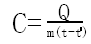

内能与热机
物体内的所有分子无规则运动的动能，以及分子热能的总和叫做物体的内能，内能的国际单位 焦耳，符号‘J’。
分子无规则运动的剧烈程度与温度有关，物体温度越高，分子运动越剧烈，分子动能越大。
物理学中把分子的这种无规则运动叫分子的热运动。
热力学温度单位 开尔文，简称 开，符号‘k’。冰水混合物的热力学温度是273.15k，热力学温度（T）和摄氏温度（t）的换算关系是：
T = 23.15 + t
改变物体内的内能的两种途径：
（1）做功；
（2）热传导条件（热度差）
在热传递过程中，物体间内能传递的多少称为热量，用字母‘Q’表示，常用单位是 焦耳，符号‘J’
实验表明，m = 1kg的水温度升高1℃要吸收热量4.2*103；温度降低1℃要分出热量4.2*103。其中，变化前的温度为t，变化后的温度为t'，及其热容差（c）为：

相同质量的同种物质升高相同的温度吸收的热量相同；
相同质量的不同物质升高相同的温度吸收的热量不同。